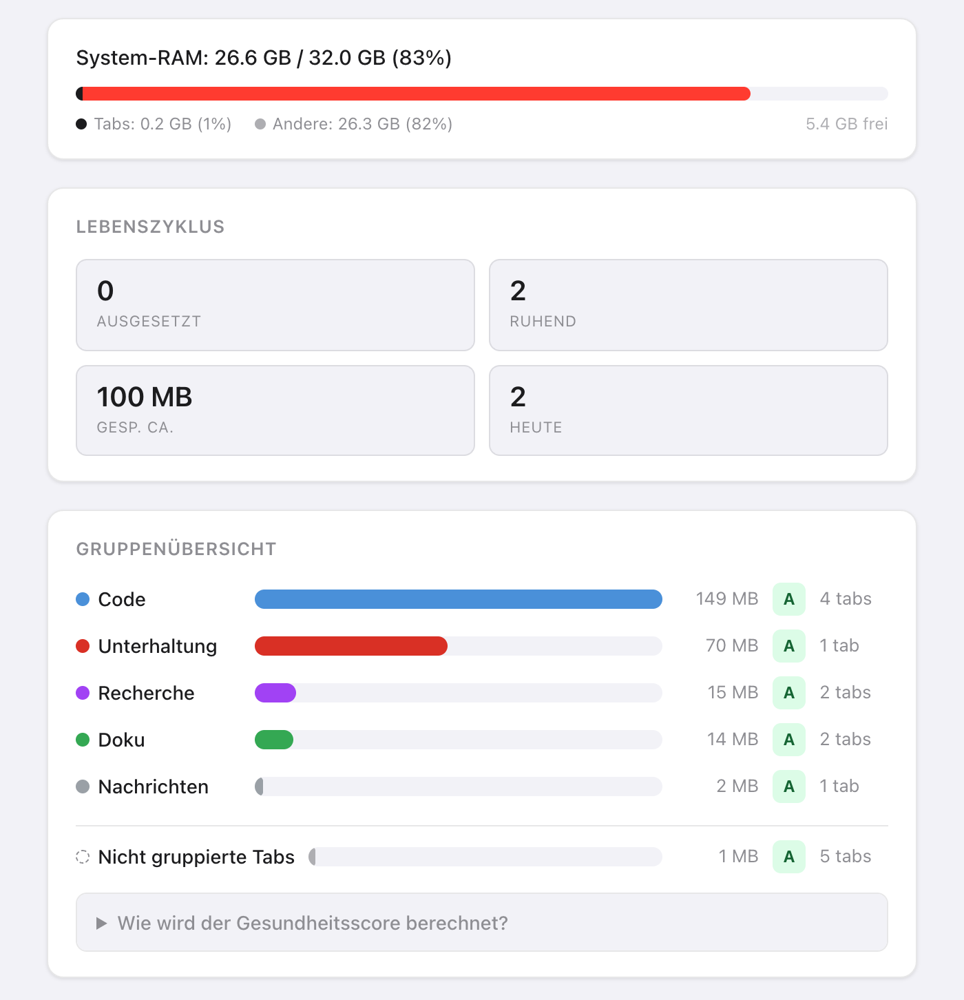
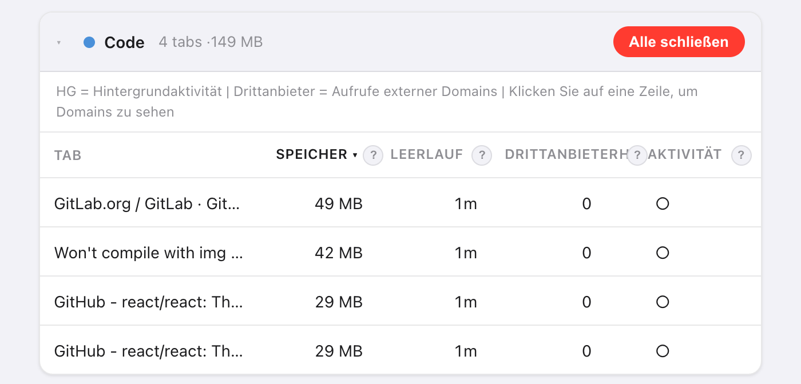
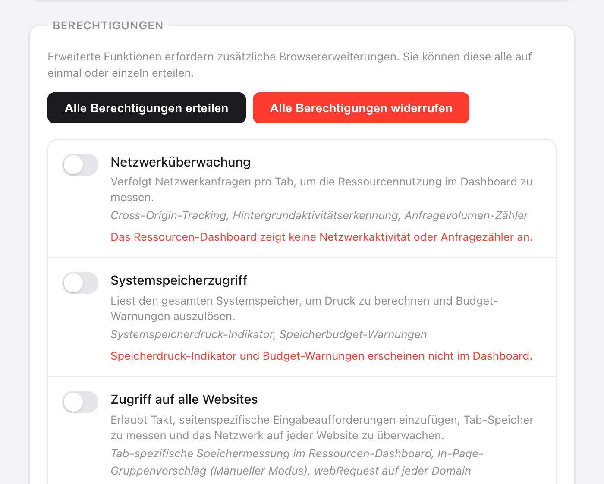

Kurz gesagt: Öffnen Sie in Takt Optionen → Dashboard. Die Gruppen sind nach geschätztem Speicherverbrauch geordnet, und die Tabs jeder Gruppe sind nach Größe sortiert, der größte zuerst.
- Speicherschätzung pro Tab, Leerlaufzeit, Drittanbieter-Domains und Hintergrundaktivität.
- Gesundheitsbewertung von A bis F pro Tab-Gruppe, eine Systemspeicher-Anzeige und Speicherbudgets, die Tabs für Sie anhalten.
- Premium ($3/Monat oder $30/Jahr). Gemessen in Ihrem Browser, von nichts außerhalb davon.
Warum ist so schwer zu erkennen, welcher Tab Speicher verbraucht?
Chrome zeigt einen Speicherwert in der Hover-Karte eines Tabs, immer nur für einen Tab. Bei 30 offenen Tabs sind das 30-mal Mauszeiger drüber, und Summen gibt es keine.
Meist interessiert Sie ein einzelner Tab ohnehin nicht. Sie wollen wissen, ob „Research“ oder „Entertainment“ die Gruppe ist, die Sie schließen sollten. Deshalb addiert Takt den Speicher pro Tab-Gruppe.

Wie schätzt Takt den Arbeitsspeicher eines Tabs?
Takt führt in jedem Tab ein kurzes Skript aus und addiert vier Anteile:
| Anteil | Wie er gemessen wird |
|---|---|
| JavaScript-Heap | Belegter Heap, wie Chrome ihn der Seite meldet |
| DOM-Baum | Anzahl der Elemente × etwa 1,5 KB |
| Geladene Ressourcen | Dekodierte Größe jeder Datei, die die Seite geladen hat |
| Canvas-Puffer | Breite × Höhe × 4 Byte pro Canvas |
Betrachten Sie das Ergebnis als Rangfolge, nicht als Rechnung. Der Grundverbrauch des Browsers pro Tab fehlt darin, daher kann Chromes Wert für denselben Tab abweichen.
Manche Tabs lassen sich nicht messen. In angehaltenen Tabs läuft nichts. Chrome-Seiten (chrome://), Erweiterungsseiten und der Chrome Web Store erlauben keine Skripte; sie erscheinen unter Nicht überwachte Tabs. Antwortet ein Tab nicht innerhalb von 3 Sekunden, zeigt Takt seinen letzten bekannten Wert.

Was bedeuten die Gesundheitsbewertungen von A bis F?
Jede Gruppe startet mit 100 Punkten und verliert Punkte anhand von vier Faktoren:
| Faktor | Bedingung | Abzug |
|---|---|---|
| Speicher (Gruppensumme) | Über 500 MB / über 200 MB | −30 / −15 |
| Durchschnittliche Leerlaufzeit | Über 60 Min. / über 30 Min. | −20 / −10 |
| Tabs mit Hintergrundaktivität | Mehr als 3 / mindestens 1 | −20 / −10 |
| Drittanbieter-Domains | Über 50 / über 20 | −15 / −5 |
Noten: A ab 90, B 75 bis 89, C 60 bis 74, D 40 bis 59, F unter 40. Eine Gruppe mit 300 MB, deren Tabs im Schnitt 45 Minuten inaktiv sind, kommt auf 75: ein B.
„Hintergrundaktivität“ heißt, dass der Tab in den letzten 60 Sekunden eine Netzwerkanfrage abgeschlossen hat. „Drittanbieter“ ist jede Domain außer der eigenen Website des Tabs und ihren Subdomains. Gängige CDNs werden gesondert gezählt, damit sie die Bewertung nicht aufblähen.
Was tue ich, wenn ich die schweren Tabs gefunden habe?
- Aussetz-Empfehlungen. Takt listet 5 Tabs zum Anhalten auf, geordnet nach Speicher und Leerlaufzeit, mit zusätzlichem Gewicht für Hintergrundaktivität. Ausgenommen sind der aktive Tab, angeheftete Tabs und ein Tab, der allein in seiner Gruppe ist. Klicken Sie auf Aussetzen, um einen anzuhalten.
- Alle schließen auf einer Gruppenkarte schließt diese Gruppe.
- Hibernieren Sie einen Tab, den Sie später zurückhaben möchten. Siehe wie die Hibernierung funktioniert.
Kann ich begrenzen, wie viel Arbeitsspeicher eine Tab-Gruppe verbraucht?
Ja. Geben Sie unter Settings → Memory Budgets einen Gruppennamen und eine Grenze in MB ein. Takt prüft die Budgets alle 15 Sekunden.
Überschreitet eine Gruppe ihr Budget, erhalten Sie eine Benachrichtigung: die Gruppe, ihr Verbrauch, ihr Budget und „Suspending tabs in 10s — click to cancel“. Ignorieren Sie sie, hält Takt die größten Tabs dieser Gruppe an, bis sie wieder unter dem Budget liegt. Der aktive Tab, angeheftete Tabs und Tabs, die Audio abspielen, bleiben immer unberührt. Klicken Sie auf die Benachrichtigung, um abzubrechen.
Budgets beruhen auf denselben Schätzungen und brauchen deshalb ebenfalls den Zugriff auf alle Websites.
Welche Berechtigungen braucht das Dashboard?
Bei der Installation keine. Sie erteilen jede einzeln unter Settings → Berechtigungen und können sie dort jederzeit widerrufen.
| Berechtigung | Was sie ergänzt | Ohne sie |
|---|---|---|
| Zugriff auf alle Websites | Speicherschätzungen pro Tab | Speicher zeigt „—“ |
| Netzwerküberwachung | Drittanbieter-Domains und Hintergrundaktivität (braucht zusätzlich Zugriff auf alle Websites) | Keine Netzwerkspalten |
| Systemspeicherzugriff | Die Anzeige des System-RAM | „Systemspeicher nicht verfügbar“ |
Die Netzwerküberwachung sieht nur Anfragen, die nach dem Erteilen gestellt werden. Laden Sie offene Tabs neu, damit die Zählung beginnt. Takt liest Adressen und Zeitpunkte der Anfragen, keine Seiteninhalte.

Was das Dashboard Ihnen nicht sagen kann
Es schätzt den Speicher der Seiten. Chromes Prozessliste liest es nicht, deshalb sieht es weder GPU-Speicher noch Erweiterungen noch den Browser selbst. Zeigt die Systemanzeige den Großteil Ihres RAM unter „Andere“, geht dieser Speicher an andere Apps oder an Chrome selbst, nicht an das, was Ihre Seiten belegen.
Die Gruppe finden, die Ihren RAM frisst. Und sie dann schlafen legen.
Zu Chrome hinzufügenHäufige Fragen
Wie schätzt Takt den Arbeitsspeicher eines Tabs?
Es addiert den belegten JavaScript-Heap, die Anzahl der Elemente × etwa 1,5 KB, die dekodierte Größe der geladenen Ressourcen und Canvas-Puffer mit Breite × Höhe × 4 Byte. Nutzen Sie das, um Tabs in eine Rangfolge zu bringen.
Warum zeigt die Spalte Speicher einen Strich?
Der Zugriff auf alle Websites ist nicht erteilt, der Tab ist angehalten, oder es ist eine Seite, auf der Erweiterungen keine Skripte ausführen dürfen, etwa chrome://-Seiten.
Ist das Ressourcen-Dashboard kostenlos?
Nein. Dashboard und Speicherbudgets sind Premium, für $3/Monat oder $30/Jahr.
Sendet Takt meine Tab-Daten irgendwohin, um sie zu messen?
Nein. Jede Messung läuft in Ihrem Browser. Siehe wie Takt Daten lokal hält.